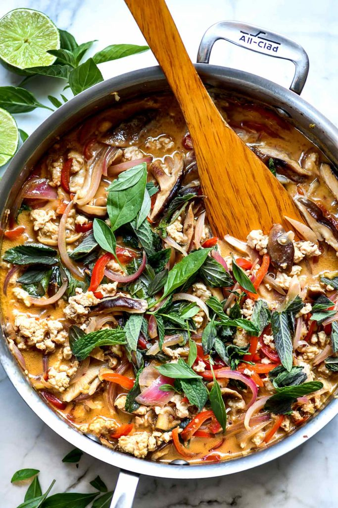

Thai Basil Chicken

Description
Thai Basil Chicken is a golden standard for Thai Chicken stir fries, and the recipe below will provide those who make this dish with an athentic Thai flavored dish that leaves you always asking for more.
Ingredients
- 1 pound ground chicken thighs
- 1/2 pound fresh shiitake mushrooms sliced
- 1 red bell pepper cored and sliced
- 1 red onion thinly sliced
- 4 tablespoons vegetable or canola oil
- 2 tablespoons fresh ginger minced
- 3 garlic cloves minced or pressed
- 1 1/2 cups plus 1/4 cup for garnish, of thai basil (or basil of your preference)
- 1/2 cup fresh mint
- 1 15-ounce can coconut milk
- 4 tablespoons soy sauce (use light soy sauce for less salty flavor)
- 6 tablespoons rice wine vinegar
- 2 to 3 tablespoons fish sauce to taste
- 1 tablespoon chile garlic sauce or Sambal Oelek or more to taste
- 1 8-ounce package rice stick noodles or 8 cups cooked rice
- ground peanuts and lime for garnish
Instructions
- Heat a deep sided fry pan over medium heat. Heat 2 tablespoons of oil in the pan.
- Add the the mushrooms, onion, and red pepper and cook until softened, about 8 -10 minutes.
- Transfer the vegetables to a bowl and set aside.
- Heat 2 tablespoons of oil to the pan then add the minced ginger and garlic. Cook for 30 seconds or until fragrant.
- Add the ground chicken. Use a wooden spatula to break the chicken into small pieces as it browns. Cook for 6-8 minutes or until cooked through.
- While the chicken is cooking, in a 4 cup measuring cup or bowl, whisk the coconut milk, soy sauce, rice vinegar, fish sauce and chile sauce.
- When the chicken is cooked through, add the mushroom and onion mixture back to the pan with the coconut milk mixture, 1 1/2 cup basil plus mint and simmer until reduced by one third.
- Serve the chicken mixture over cooked rice or softened rice stick noodles. Serve with additional basil for garnish, peanuts and lime wedges.